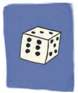
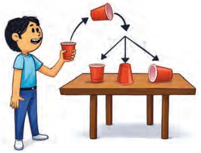

<!DOCTYPE html>
<html lang="en">
<head>
<meta charset="UTF-8">
<meta name="viewport" content="width=device-width,initial-scale=1">
<title>7.2 Measuring Probability Objectively — The Mathematics of Maybe Intro to Probability</title>
<meta name="description" content="Class 9 Mathematics · The Mathematics of Maybe Intro to Probability · 7.2 Measuring Probability Objectively">
<link rel="icon" href="data:image/svg+xml,<svg xmlns='http://www.w3.org/2000/svg' viewBox='0 0 100 100'><text y='.9em' font-size='90'>📘</text></svg>">
<link rel="stylesheet" href="../../../assets/book.css">
<link rel="stylesheet" href="https://cdn.jsdelivr.net/npm/katex@0.16.11/dist/katex.min.css" crossorigin="anonymous">
</head>
<body>
<header class="topbar">
<div class="topbar-in">
  <div class="crumb">
    <span class="c1"><a href="../../../index.html">Library</a> · <a href="../../index.html">Class 9 Mathematics</a></span>
    <span class="c2">The Mathematics of Maybe Intro to Probability · 7.2 Measuring Probability Objectively</span>
  </div>
  <a class="tb-btn" data-nav="prev" href="../../07-the-mathematics-of-maybe-intro-to-probability/02-exercise-7.1/index.html" title="Exercise 7.1">←</a>
  <details class="drawer"><summary class="tb-btn" title="Sections in this chapter">☰</summary>
<div class="drawer-panel"><div class="dh">The Mathematics of Maybe Intro to Probability</div><a href="../01-what-is-probability-7.1/index.html">7.1 What is Probability?</a><a href="../02-exercise-7.1/index.html">Exercise 7.1</a><a href="../03-measuring-probability-objectively-7.2/index.html" aria-current="page">7.2 Measuring Probability Objectively</a><a href="../04-exercise-7.2/index.html">Exercise 7.2</a><a href="../05-elements-of-probability-sample-spaces-and-events-7.3/index.html">7.3 Elements of Probability: Sample Spaces and Events</a><a href="../06-exercise-7.3/index.html">Exercise 7.3</a><a href="../07-tree-diagrams-7.4/index.html">7.4 Tree diagrams</a><a href="../08-exercise-7.4/index.html">Exercise 7.4</a></div></details>
  <a class="tb-btn" data-nav="next" href="../../07-the-mathematics-of-maybe-intro-to-probability/04-exercise-7.2/index.html" title="Exercise 7.2">→</a>
  <button class="tb-btn" data-theme-toggle title="Toggle light / dark" aria-label="Toggle light or dark theme">◐</button>
</div>
<div class="progress"><span style="width:82.4%"></span></div>
</header>
<main class="wrap">
<div class="sec-head">
  <p class="eyebrow"><a href="../index.html">Chapter 7 · The Mathematics of Maybe Intro to Probability</a></p>
  <h1>7.2 Measuring Probability Objectively</h1>
  <p class="sec-meta">Textbook pages 5–11 · 6 figures</p>
</div>
<article class="prose">
<p>There are two main ways of estimating the probability of an event objectively:</p>
<ul class="qlist">
<li><span class="mk">1.</span><span class="lt">Using evidence from experience: This involves collecting</span></li>
</ul>
<p>data either by performing an experiment multiple times or by analysing statistical data from past observations. In both cases, the probability is estimated by calculating the relative frequency of the event based on the collected evidence. We call this experimental probability.</p>
<ul class="qlist">
<li><span class="mk">2.</span><span class="lt">Using theoretical methods: This approach assumes that all</span></li>
</ul>
<p>possible outcomes are equally likely (when there is no reason to believe that any one outcome is more likely than another). The probability is then determined by reasoning about the number of favourable outcomes in relation to the total number of possible outcomes. We call this theoretical probability.</p>
<h3 id="s-7-2-1-experimental-probability-performing-observations-or-">7.2.1 Experimental Probability: Performing Observations or Experiments</h3>
<p>Another way of obtaining objective estimates for probabilities is to perform an experiment. In an experiment, the event is a result of the experiment and is called an outcome. The set of all possible outcomes in an experiment is called the sample space. The sample space may be listed within brackets, separated by commas as shown below. Example 1: Experiment: A coin is tossed Possible Outcomes: Heads (H) or Tails (T) (See Fig. 7.2) Sample Space: {H, T} Experiment: A die is rolled Possible Outcomes: The top side of the die shows 1, 2, 3, 4, 5, or 6 dots (See Fig. 7.3) Sample Space: {1, 2, 3, 4, 5, 6}</p>
<figure class="fig"><figcaption>Fig. 7.2: Heads and tails of a coin Fig. 7.3: A 6-sided die</figcaption></figure>
<figure class="fig side-fig"></figure>
<p>Experimental Probability = Number of times the event occurred . Total Number of trials</p>
<p>Example 2: Suppose you roll a die 50 times, and it lands on a 4 exactly 8 times. Experimental probability of rolling a 4 is \(\frac{8}{50} = 0 16\). or 16%. We also say that the relative frequency of rolling a 4 is \(\frac{8}{50} = 0 16\). . Relative frequency helps you understand probability based on actual data, rather than theoretical predictions. It is especially useful in statistics and data analysis when you are working with observed outcomes.</p>
<p>Did you know? The game of Snakes and Ladders originates in ancient India. It evolved from a traditional dice game called Jñān-Chaupad̤, which was used as an educational tool. Jñān-Chaupad̤ aimed to convey moral lessons, with each ladder symbolising a virtue and each snake representing a vice. Through gameplay, it illustrated the consequences of good and bad behaviour. Various versions of Jñān-Chaupad̤ have been found in different parts of India.</p>
<p class="caption">Fig. 7.4: A Jain Jñān-Chaupad̤ game on cloth, National Museum (India, 19th century)</p>
<h3 id="s-7-2-2-theoretical-probability">7.2.2 Theoretical Probability</h3>
<p>Theoretical probability studies the likelihood of an event happening based on all possible outcomes being equally likely. It is what we expect to happen in an ideal, perfectly fair situation. In this scenario, no experiment or data is required. Theoretical probability is usually denoted as P (Event) or P (Outcome).</p>
<aside class="sidenote"><p>Number of favourable outcomes</p></aside>
<p>Theoretical Probability (P) = .</p>
<aside class="sidenote"><p>Number of possible outcomes</p></aside>
<p>Example 3: If you roll a standard 6-sided die, what is the theoretical probability of getting a 4?</p>
<h4 class="callout-h" id="s-solution">Solution:</h4>
<p>Number of favourable outcomes \(= 1\) (only the number 4) Number of all possible outcomes \(= 6\) (the numbers 1 through 6)</p>
<div class="mathblock"><p>P (rolling \(a 4) = \frac{1}{6} =\) 0.1666… \(\approx 0.167\) or 16.7%.</p></div>
<p>Example 4: A letter is picked at random from the word ‘PROBABILITY’. What is the probability of picking the letter B?</p>
<h4 class="callout-h" id="s-solution">Solution:</h4>
<p>Number of favourable outcomes = 2 (there are 2 Bs in the word PROBABILITY) Number of all possible outcomes = 11 (The number of letters in the word PROBABILITY) P (Picking the letter B) \(= \frac{2}{11} = 0.1818\)... \(\approx 0.182\) or 18.2%.</p>
<h3 id="s-7-2-3-analysing-statistical-data-using-probability">7.2.3 Analysing Statistical Data Using Probability</h3>
<p>The way of collecting evidence through statistical data is used extensively in the world of business for marketing, forecasting sales, insurances and in science and social science research. Example 5: Suppose you anonymously collect information regarding the favourite fruit of 50 students in your class. Let us assume that the results are: 20 students like mango, 15 students like apples, 10 students like bananas, and 5 students like grapes. Let us play a game! Suppose we randomly pick one student from the class and try to guess their favourite fruit. What’s the probability that the student’s favourite fruit is mango? Statistical probability is based on collected data. So, a reasonable estimate that the student’s favourite fruit is mango is Probability of mango as the favourite fruit Number of students who like mango = Total number of students \(= \frac{20}{50} = 0 4\). . So, there is a 0.4 or 40% chance that a randomly chosen student in the class likes mango. Now assume that you want to buy fruits for the entire school depending on the students’ favourite fruits. You would need to estimate the quantity of each type of fruit you need to purchase for the entire school of, say, 1500 students. It is usually impractical to collect data from all students or the entire population. The application of statistical probability in the real world is usually based on evidence collected from a sample. The population, i.e., the total number of students in the school, is 1500, and we collected evidence from a sample of 50 students from one class. An estimate of the probability that mango</p>
<p>is the favourite fruit was calculated to be 0.4. So, that would mean that we need to buy approximately 600 (40% of 1500) mangoes, while the remaining would be other fruits - apples, bananas and grapes. If we want to be more confident about our estimate, we would choose a larger sample, for example, by asking 100 students, and make sure it is more representative, such as including students from different classes or grades. This process is called sampling in statistics.</p>
<p>LEARN MORE ABOUT SAMPLING</p>
<p>Want to learn more about sampling? What we have learned so far is just the beginning! When collecting data through samples, there are other important things to think about - like how big your sample should be and how to make sure your sample truly represents the whole population. The size of your sample and making sure it’s fair and not biased can help your results be more accurate. If you are interested and want to explore more about why sample size and representation matter in statistics, you can read more about it in print or digital resources.</p>
<p>Summarising, experimental probability is based on actual data collected from trials, not on assumptions. Theoretical probability relies on the assumption of equally likely outcomes (a perfectly fair situation) and does not use experimental data. Even in perfectly fair situations, experimental probability can differ from theoretical probability, especially when the number of trials is small. As the number of trials increases, the experimental probability tends to get closer to the theoretical probability - this is known as the Law of Large Numbers.</p>
<h2 id="s-think-and-reflect">Think and Reflect</h2>
<p>If I have rolled a 4 on a die 8 times in succession, the probability of rolling a 4 again is still only \(\approx 0.16\) (assuming the die is fair). Probability does not tell you what will happen next but predicts what will happen in the long run.</p>
<p>GAMBLER’S FALLACY</p>
<p>Many people think that if something random happens many times in a row (like flipping a coin and getting heads six times), then the opposite outcome (tails) is more likely to happen next. But actually, the coin does not keep track of what happened before. Every time you flip, the chance of heads or tails stays exactly the same - like starting afresh. The coin has no memory, so past flips do not change what happens next. This common misunderstanding is called Gambler’s Fallacy. For example, imagine that you are flipping a fair coin. It comes up heads six times in a row. You might feel that on the next flip you are sure to get a tail, because tails haven’t come up for a while. However, the probability of getting tails on the next flip is still 50% or , exactly the same as before.</p>
<div class="mathblock"><p>\(\frac{1}{2}\)</p></div>
<p>The coin has no memory of past flips!</p>
<p>Example 6: Let us say you are playing Snakes and Ladders, and you are rolling a fair 6-sided die to move. You have just rolled the die three times in a row, and each time you got a 6. Now, you think: ‘I have already rolled three \(6s -\) there is no way I will get a 6 again on the next roll!’ This thinking is Gambler’s Fallacy - because each roll of the die is or 16.6%.an independent event. The probability of rolling a 6 is always: \(\frac{1}{6} \approx 0.166\) It does not change based on what happened in previous turns. Key Idea: In Snakes and Ladders, as in many games of chance, each roll of dice is independent. The Gambler’s Fallacy tricks people into believing there is a pattern, when in fact, such randomness has no memory.</p>
<p>FAIR AND UNBIASED</p>
<p>When we speak of a coin, we assume it to be ‘fair’, i.e., it is symmetrical so that there is no reason for it to come down more often on one side than the other. We call this property of the coin as being ‘unbiased’. By the phrase ‘random toss’, we mean that the coin is allowed to fall freely without any bias or interference.</p>
<figure class="fig"></figure>
<ul class="qlist">
<li><span class="mk">1.</span><span class="lt">A teacher mixes a large bag of sweets of different colours and</span></li>
</ul>
<p>randomly selects a sample of 30 sweets. She counts the number of sweets of each colour: 10 red sweets | 8 green sweets | 7 yellow sweets | 5 blue sweets</p>
<ul class="qlist">
<li><span class="mk">(i)</span><span class="lt">Calculate the probability that a randomly picked sweet from</span></li>
</ul>
<p>the sample is green.</p>
<ul class="qlist">
<li><span class="mk">(ii)</span><span class="lt">If there are 600 sweets in total in the large bag, estimate how</span></li>
</ul>
<p>many are likely to be yellow, based on the sample results.</p>
<ul class="qlist">
<li><span class="mk">2.</span><span class="lt">A survey is conducted at a school where a random sample of 40</span></li>
</ul>
<p>students is asked about their favourite club. The responses are: 14 students: Science Club | 11 students: Arts Club | 9 students: Sports Club | 6 students: Debate Club Assume there are 800 students in the whole school.</p>
<ul class="qlist">
<li><span class="mk">(i)</span><span class="lt">What is the probability that a randomly chosen student from</span></li>
</ul>
<p>the sample prefers the Arts Club?</p>
<ul class="qlist">
<li><span class="mk">(ii)</span><span class="lt">Using the sample results, estimate how many students in the</span></li>
</ul>
<p>whole school are likely to prefer the Sports Club.</p>
<ul class="qlist">
<li><span class="mk">3.</span><span class="lt">Toss a coin 20 times and record the result each time (heads or tails).</span></li>
<li><span class="mk">(i)</span><span class="lt">How many times did you get heads?</span></li>
<li><span class="mk">(ii)</span><span class="lt">How many times did you get tails?</span></li>
<li><span class="mk">(iii)</span><span class="lt">Calculate the experimental probability of getting heads.</span></li>
<li><span class="mk">(iv)</span><span class="lt">If you toss the coin once more, what is the probability of</span></li>
</ul>
<p>getting tails?</p>
<figure class="fig"></figure>
<ul class="qlist">
<li><span class="mk">4.</span><span class="lt">Toss a paper cup into the air</span></li>
</ul>
<p>100 times. After each toss record whether the cup lands on its bottom, upside down on its top or on its side (See Fig. 7.5). Assign probabilities to the outcomes by using experimental probability.</p>
<ul class="qlist">
<li><span class="mk">5.</span><span class="lt">What is the probability of getting</span></li>
</ul>
<p>an even number when rolling a fair 6-sided die?</p>
<p class="caption">Fig. 7.5: Paper cup landing positions</p>
</article>
<nav class="pager"><a class="" data-nav="prev" href="../../07-the-mathematics-of-maybe-intro-to-probability/02-exercise-7.1/index.html"><span class="dir">← Previous</span><span class="t">Exercise 7.1</span><span class="ch">The Mathematics of Maybe Intro to Probability</span></a><a class="nx" data-nav="next" href="../../07-the-mathematics-of-maybe-intro-to-probability/04-exercise-7.2/index.html"><span class="dir">Next →</span><span class="t">Exercise 7.2</span><span class="ch">The Mathematics of Maybe Intro to Probability</span></a></nav>
</main><footer class="site">Generated from the source textbook PDFs · text, figures and exercises belong to their respective publishers.</footer><script defer src="https://cdn.jsdelivr.net/npm/katex@0.16.11/dist/katex.min.js" crossorigin="anonymous"></script>
<script defer src="https://cdn.jsdelivr.net/npm/katex@0.16.11/dist/contrib/auto-render.min.js" crossorigin="anonymous"
  onload="renderMathInElement(document.body,{delimiters:[
    {left:'\\(',right:'\\)',display:false},
    {left:'$$',right:'$$',display:true},
    {left:'\\[',right:'\\]',display:true}],throwOnError:false,ignoredTags:['script','noscript','style','textarea','pre','code']})"></script>
<script src="../../../assets/book.js"></script>
<script defer src="../../../../assets/search.js?v=1789782769"></script>
<script defer src="../../../../assets/screenshot.js?v=1789782769"></script>
</body>
</html>
